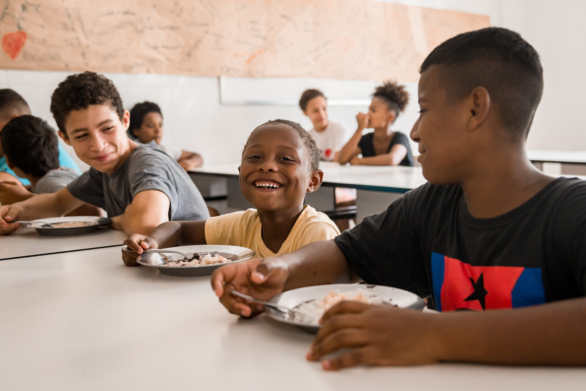
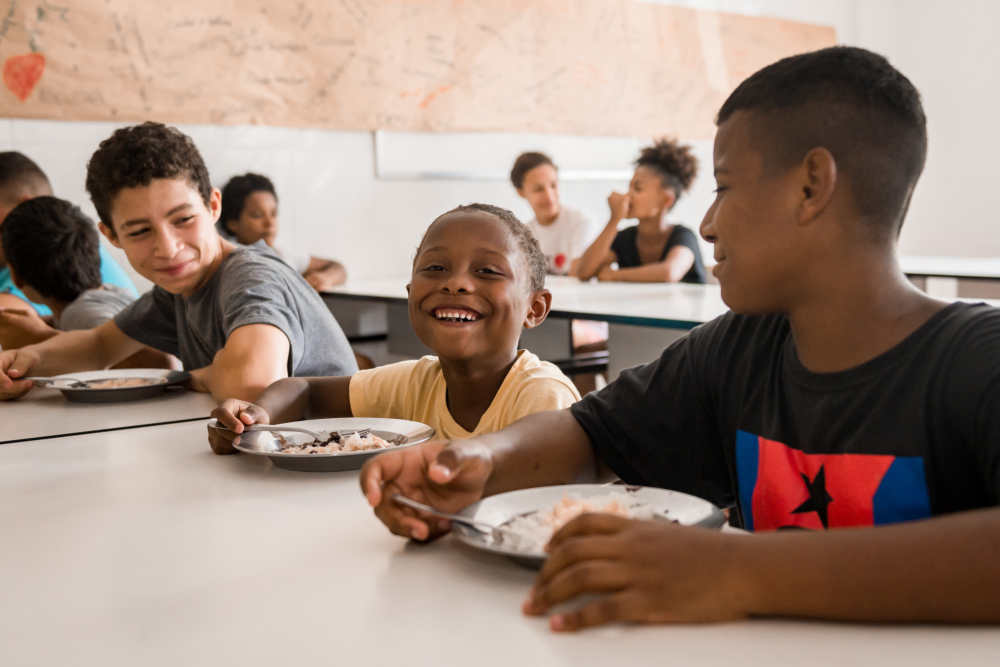
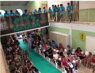
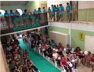
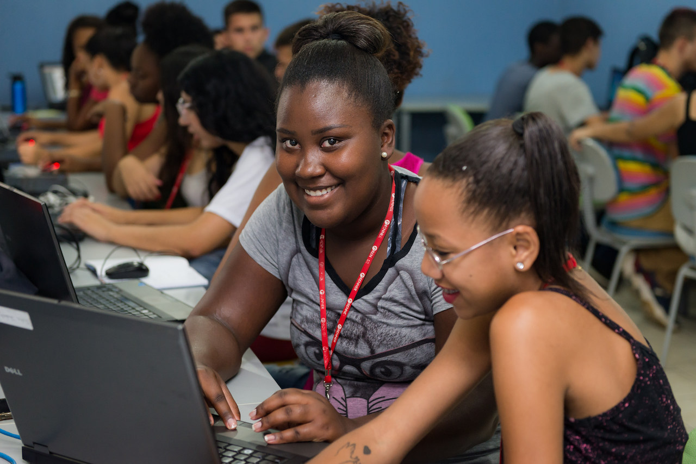
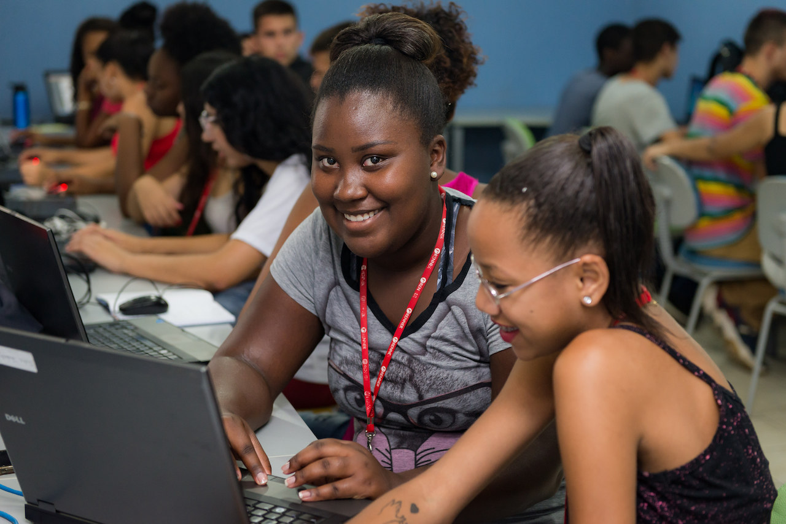
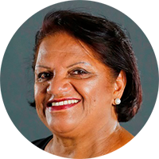

Nossa missão é gerar e promover oportunidades de crescimento pessoal e qualificação profissional através da conscientização ambiental e do desenvolvimento social para melhorar a qualidade de vida de nossa comunidade.


O Centro de Triagem da Vila Pinto – CTVP, é o segmento considerado o carro chefe do Centro de Educação Ambiental - CEA.
“Tudo começou com o lixo!” relata Marli Medeiros, Fundadora da Instituição. Foi fundado em 1996 por um grupo de mulheres da comunidade indignadas com a situação de vulnerabilidade em que estavam submetidas. Decidiram transformar a condição de pobreza e violência e buscar alternativas que lhes garantisse independência financeira e liberdade moral.
A principal motivação destas mulheres foi gerar e facilitar oportunidades de crescimento pessoal e profissional aos seus associados e a comunidade da Vila Pinto para que fossem reconhecidas como agentes de transformação buscando resgate da dignidade, da autoestima e da cidadania. Tinham como objetivo, a capacitação, a organização, a luta pelas liberdades individuais e coletivas, a justiça social, a defesa e promoção dos direitos fundamentais do ser humano, a melhoria da qualidade de vida e a preservação do meio ambiente.
 

 

O Centro Cultural Marli Medeiros - CEMME foi criado a partir da necessidade apontada pelas recicladoras associadas do Centro de Triagem que ficavam preocupadas enquanto trabalhavam que seus filhos sozinhos, ficavam expostos aos riscos que a “rua” oferecia. O centro cultural desenvolve atividades e serviços nas áreas da educação, cultura, lazer, esporte, qualificação profissional, educação ambiental, assistência social, jurídica, psicológica, orientações e demais, a crianças, adolescentes, jovens, adultos e idosos, moradores da comunidade.


Com os segmentos CTVP e CEMME já conquistados, favorecendo um público de 06 à 90 anos, surge a necessidade de atendimento às crianças menores de 6 anos. Através do esforço da coordenação do CEA e da Secretaria Municipal de Educação Infantil de Porto Alegre, em 2007 articulou-se uma parceria com a Empresa Capa Engenharia que construiu “o sonho”. Desde 2008 a escola é uma realidade. Atende 120 crianças de 0 a 5 anos e 11 meses, em um ambiente encantador e aconchegante. Tem como principal objetivo proporcionar as crianças um espaço de qualidade, que incentive sua criatividade, proporcione momentos de estimulação cognitiva, motora, sócio afetiva, enfim todas as áreas importantes para o desenvolvimento infantil.
 


Jovem Aprendiz Renner
O contrato do Jovem Aprendiz Renner no CEA tem duração de até um ano. Nesse período o Aprendiz realiza atividades teóricas, para capacitação. E atua de forma prática em lojas, com atendimento ao cliente, nos setores administrativos da empresa Renner e com as aulas teóricas na sede do CEA (localizado no bairro Bom Jesus -POA). O contrato tem duração de um ano, e durante esse período o Jovem precisa trabalhar em horário oposto ao do período escolar.
Mãos Dadas
O Projeto Mãos Dadas é um recurso educacional que tem por objetivo contribuir para a alfabetização na maior idade, além de promover a inserção na cultura digital. O projeto conta com professores de pedagogia, técnicos da áreas da psicologia, assistência social e parceiros voluntários. O Mãos Dadas, há anos, ajuda diretamente com o desenvolvimento pessoal dos nossos recicladores para com isso gerar possíveis novos caminhos em suas vidas. “Disseminar conhecimento, visão de mundo e amor é o que nos move”, relata a professora e coordenadora do projeto, Denise Mendes.


Jiu Jitsu
A prática esportiva como instrumento educacional visa o desenvolvimento integral das crianças e adolescentes, capacita o sujeito a lidar com suas necessidades, desejos e expectativas, bem como, com as necessidades, expectativas e desejos dos outros, de forma que, o mesmo possa desenvolver as competências técnicas, sociais e comunicativas, essenciais para o seu processo de desenvolvimento individual e social. Além de ampliar o campo experimental do indivíduo, cria obrigações, estimula a personalidade intelectual e física e oferece chances reais de integração social. O jiu jitsu é mais uma das ferramentas educacionais usadas na instituição. Há mais de 8 anos a modalidade é uma realidade no CEA. Todos os anos crianças e adolescentes do projeto participam de campeonatos a nível Municipal, Estadual, Nacional e, até mesmo, Mundial.
 Nasceu em 30 de junho de 1952, na cidade de Alegrete, região da “Campanha”, no interior do Rio Grande do Sul. Mudou-se para Porto Alegre em 1976 em busca de melhores condições de vida para sua família. Casada, mãe de 4 filhas naturais e um filho adotivo, na chegada à capital gaúcha, trabalhou de doméstica, bancária, auxiliar administrativo e gerente de uma loja conceituada no comércio de Porto Alegre, onde destacou-se por seu espírito empreendedor. Morando no prédio onde o pai de suas filhas era zelador Marli conheceu a Vila Pinto e neste local “acomodou” seus familiares vindos do interior. Freqüentando a Vila aos fins de semana já se envolvia nos problemas apontados pela família e em 1990, fugindo da violência doméstica que sofria, Marli mudou-se definitivamente para a Vila Pinto. Na nova realidade decidiu dedicar-se exclusivamente a trabalhos comunitários e, não se conformou em ter que se adaptar às regras impostas pelos traficantes do local. Em 1992 organizou um grupo de moradoras e fundou o Clube da Mulher. Em 1993 formou-se Promotora Legal Popular num curso que tinha por objetivo capacitar mulheres, líderes comunitárias, para a promoção e defesa dos Direitos da Mulher. Foi com este conhecimento que Marli iniciou sua caminhada para despertar e mobilizar as mulheres sobre a importância da criação de um espaço de geração de trabalho e renda que lhes permitisse a libertação moral, psicológica e financeira à que estavam submetidas. Em 1996 nascia então o Centro de Educação Ambiental, ONG que administra dois associados operacionais.
Prêmios
- 2017 - Mulheres que Inspiram - Revista Donna, Zero Hora - Porto Alegre/RS
- 2016 - Cidadã Porto-Alegrense - Prefeitura Municipal de Porto Alegre - Porto Alegre/RS
- 2009 - Responsabilidade Social – Parceiros Voluntários – Porto Alegre/RS
- 2008 - Direitos Humanos - Secretaria da Justiça e do Desenvolvimento Social do RGS
- 2006 - Relevantes Serviços Prestados à Comunidade – PMPA - Porto Alegre/RS, Brasil
- 2005 - Responsabilidade Social e Ambiental – Instituto Sócio Ambiental – São Paulo
- 2004 - As Cinquenta Mais do RGS - Mulheres Negras que fizeram e fazem a história de Porto Alegre - Porto Alegre/RS
- 2003 - Decolando Sonhos, Pilotando Negócios - Jovens Lideranças - Porto Alegre/RS
- 2003 - Destaque Liderança e Trajetória - Rotary Clube - Montevidéu, Uruguai
- 2002 - Mulher Cidadã - Assembléia Legislativa do RGS - Porto Alegre/RS
- 2001 - Destaque Comunitário, Líderes e Vencedores - Federasul - Porto Alegre/RS
- 2000 - Amiga da Cidade - Prefeitura Municipal de Porto Alegre/RS
CEA/CTVP/CEMME/Vovó Belinha Avenida Joaquim Porto Villanova, 143, Vila Pinto Bairro Bom Jesus - Porto Alegre - RS - CEP 91410-400 Telefone/Fax: (51)3338 1044